Introduction of IoT
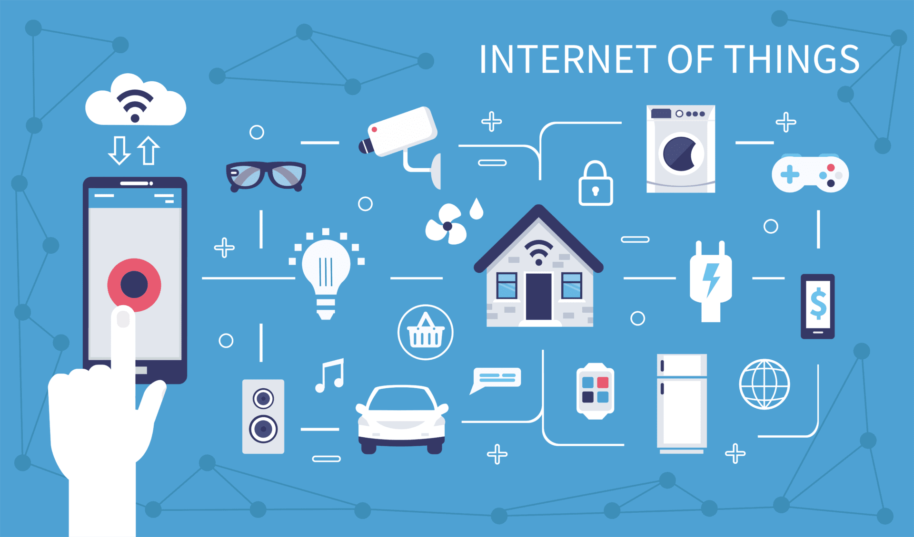The Internet of Things (IoT) refers to the network of physical objects or "things" that are embedded with sensors, software, and other technologies to connect and exchange data with other devices and systems over the internet. These interconnected devices can range from everyday household items such as refrigerators and thermostats to industrial machines, vehicles, and wearable devices. The primary goal of IoT is to enable these objects to collect and share data, allowing them to be monitored, controlled, and, in some cases, automated. This data exchange between devices can lead to more efficient processes, improved decision-making, and the development of new services and applications.
Key components of an IoT system include:
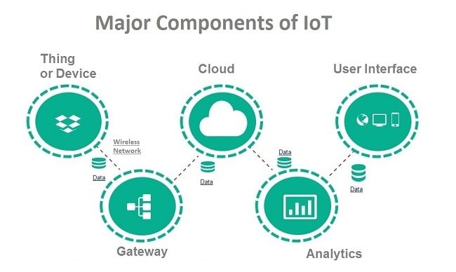- Things/Devices: Physical objects or devices embedded with sensors, actuators, and other technologies to collect and transmit data.
- Connectivity: The communication infrastructure that allows devices to connect to the internet and communicate with each other. This can include wired and wireless technologies.
- Data Processing: The analysis and processing of the data collected by IoT devices, often done in cloud or edge computing environments.
- User Interface: Interfaces through which users can interact with and control IoT devices, often through applications or web portals.
- Security: Measures to protect the data, privacy, and functionality of IoT systems, as these systems involve the exchange of sensitive information.
IoT has applications in various fields, including smart homes, healthcare, agriculture, transportation, industrial automation, and more. As the technology continues to advance, the scope and impact of IoT are expected to grow, leading to more connected and intelligent systems.
Blink LED using Arduino Cloud IOT
To blink an LED using NodeMCU ESP8266 and Arduino Cloud, start by setting up an Arduino Cloud account and creating a "Thing" representing your NodeMCU board. Configure a widget in the cloud dashboard for controlling the LED. In the Arduino IDE, include the required libraries, define the LED pin, and create a callback function to toggle the LED based on cloud changes. Initialize cloud properties and set up the connection with the NodeMCU. Connect the LED and resistor in series to a digital pin and GND on the NodeMCU. Upload the code to the NodeMCU via the Arduino IDE. Finally, test the LED control through the cloud dashboard by toggling the widget associated with the LED, witnessing the LED blink according to the cloud commands. Always exercise caution with electrical connections and components.
Hardware Required:
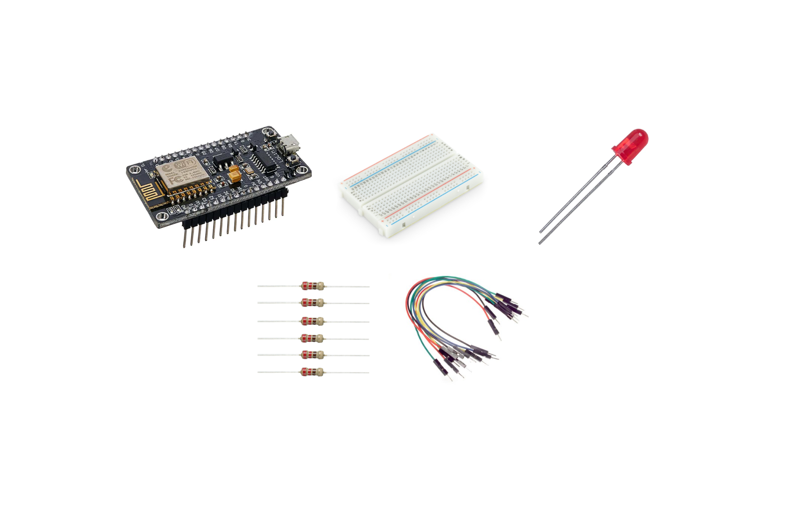- NodeMCU ESP8266
- LED
- Resistor (220-1k ohm)
- Breadboard
- Connecting wires
Steps:
1. Set Up Arduino Cloud:
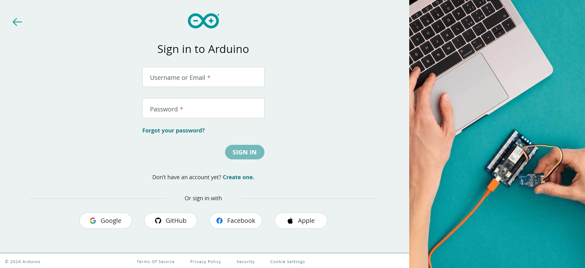Create an Account: Sign up for an account on Arduino Cloud (create.arduino.cc).
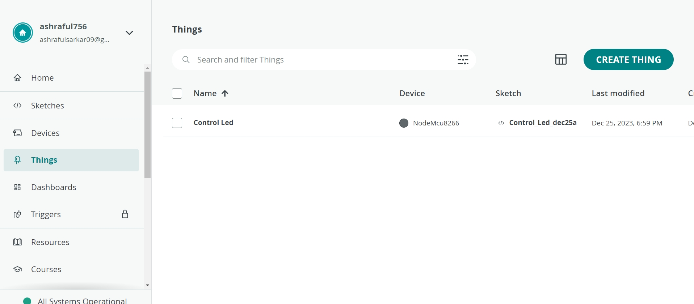Create a New "Thing": Log in to your Arduino Cloud account and create a new "Thing." Name it appropriately (e.g., "LED_Blink").
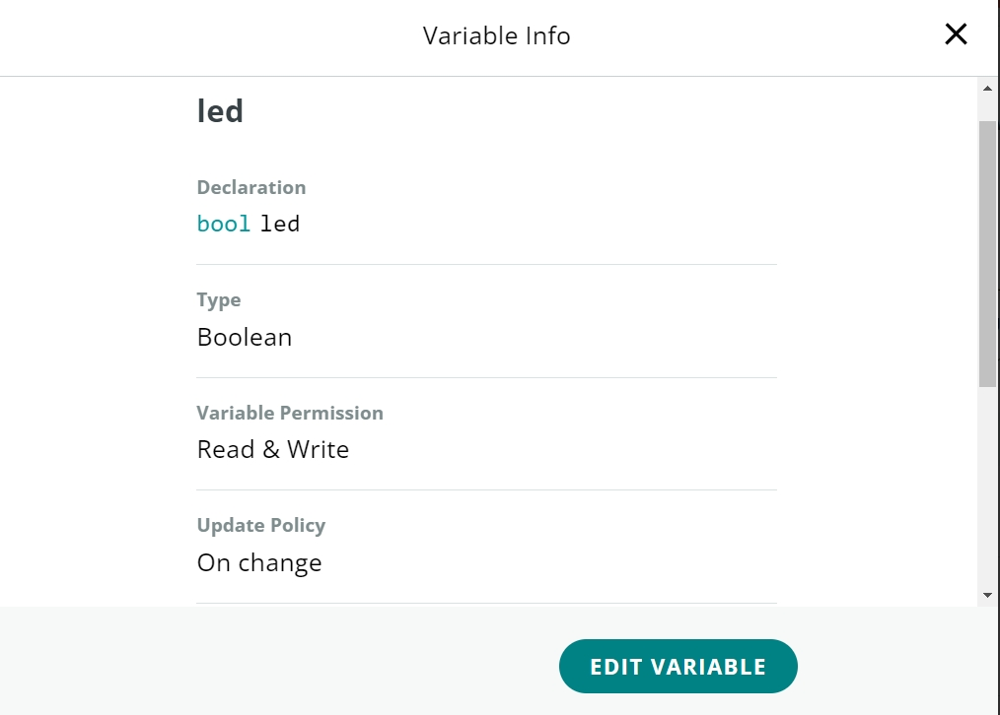Create a New "Thing": Log in to your Arduino Cloud account and create a new "Thing." Name it appropriately (e.g., "Control Led").
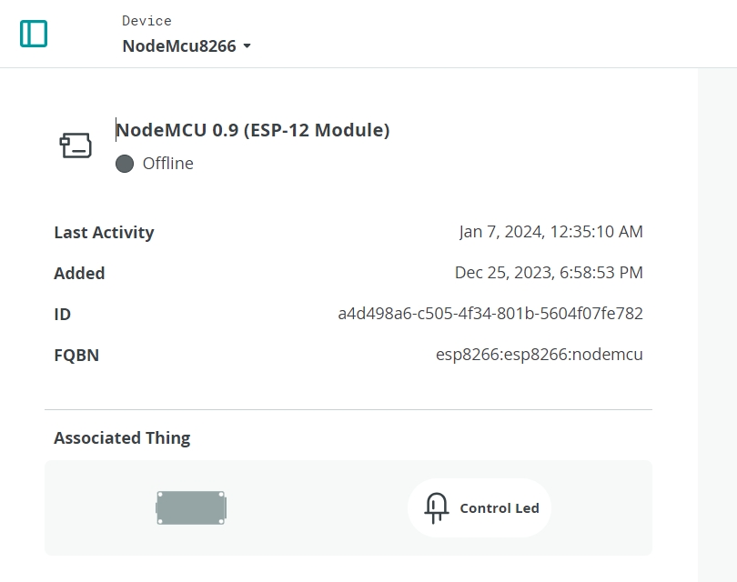Add Device: Add your NodeMCU ESP8266 as a device associated with this "Thing."
2. Configure the Cloud Dashboard:
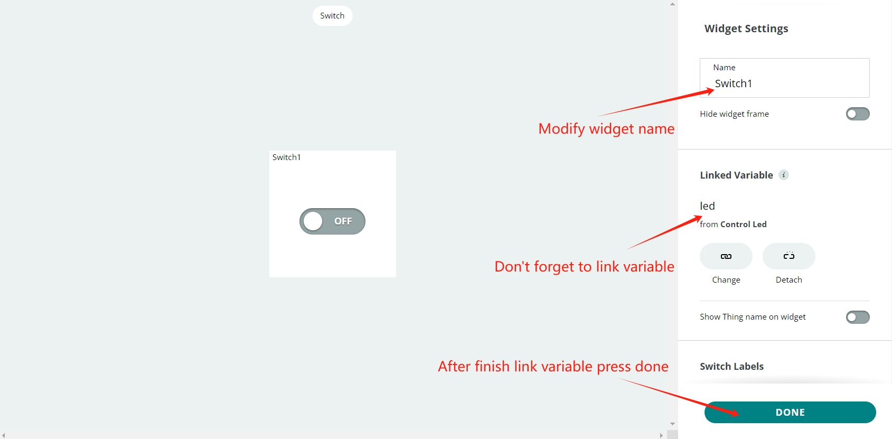Create an LED Widget: In the Arduino Cloud dashboard, create a widget for controlling the LED. Assign this widget to a virtual pin (e.g., V1).
Open a new sketch in Arduino IDE.
2. Open a new sketch in Arduino IDE:
Note:Throughout this experiment, we opted for the online Arduino IDE. However, there's the alternative of utilizing the Arduino IDE locally; in such a scenario, you'd need to download and integrate the board and library components. 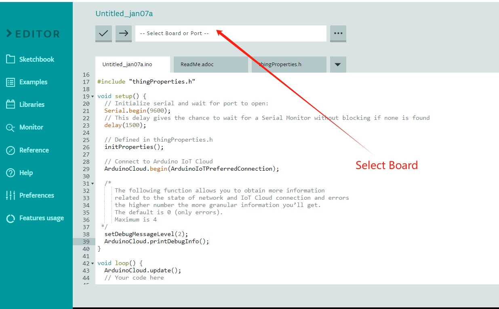 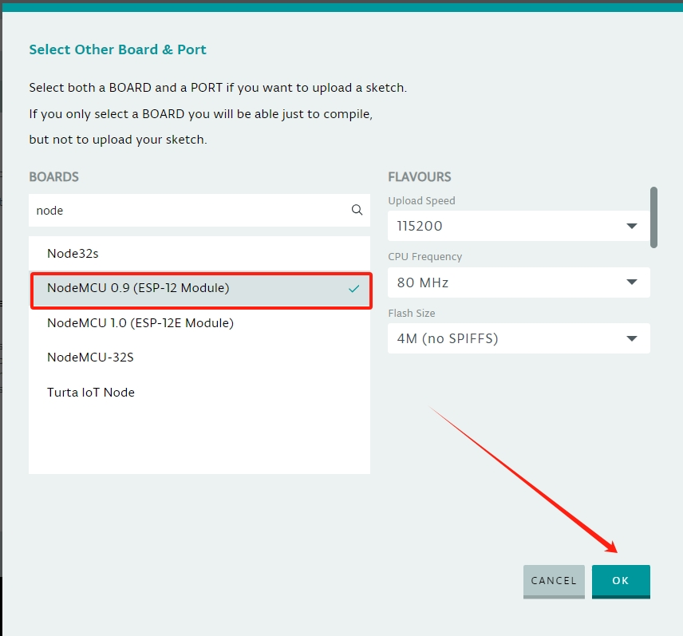After uploading the code, it will be connected to the Arduino Cloud IoT. You can control the IoT using your mobile phone and computer. For the application, you need to download the "IoT cloud "application.
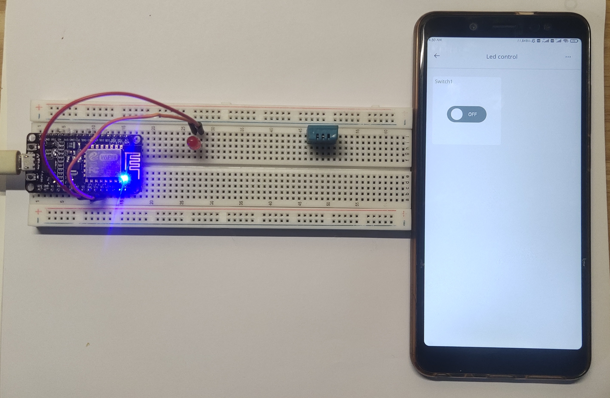 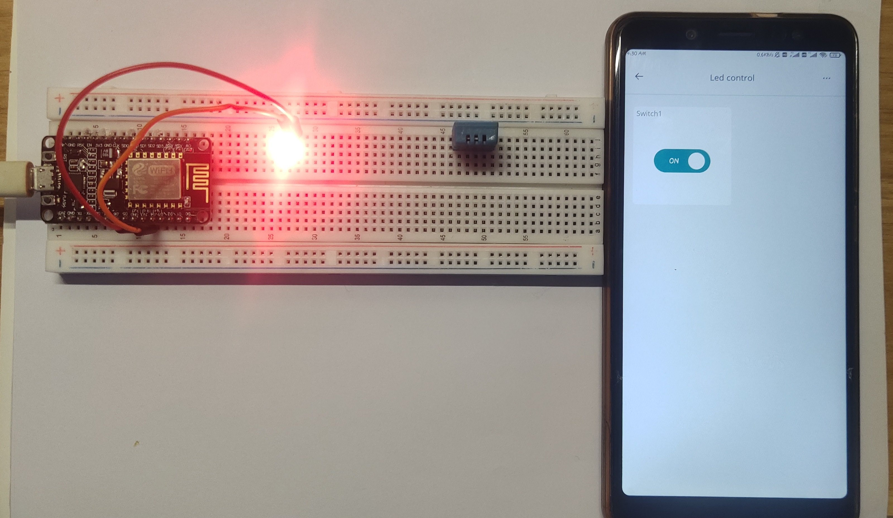
Get Humidity Temperature data on ThingSpeak IoT
Components Needed:
- NodeMCU ESP8266
- DHT11 sensor
- Breadboard
- Connecting wires
Connect the DHT11 sensor to the NodeMCU:
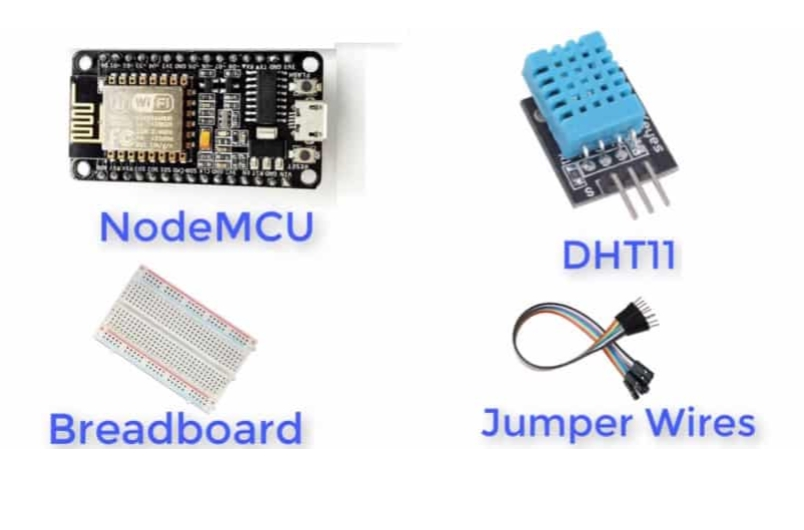2. Wiring Connections:
Connect the DHT11 sensor to the NodeMCU:
- DHT11 VCC -> NodeMCU 3.3V
- DHT11 GND -> NodeMCU GND
- DHT11 Data pin -> NodeMCU GPIO pin D2 (or any other digital pin, adjust pin number in code)
Step-by-Step Process:
1. Set up ThingSpeak:
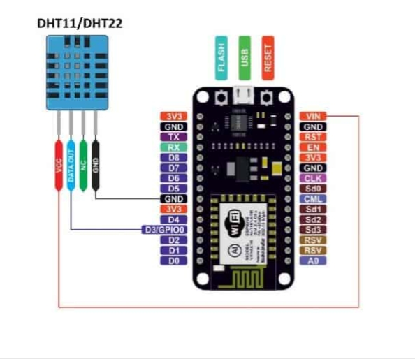Create a ThingSpeak account (if you don't have one) and log in.
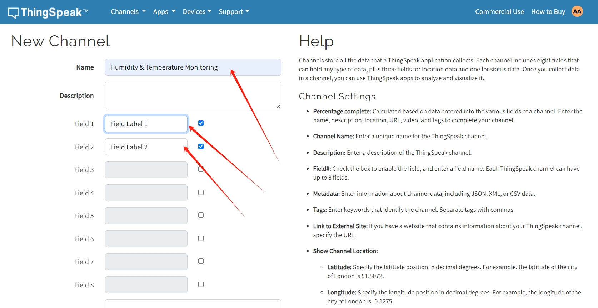Create a new channel.Create a ThingSpeak account (if you don't have one) and log in.
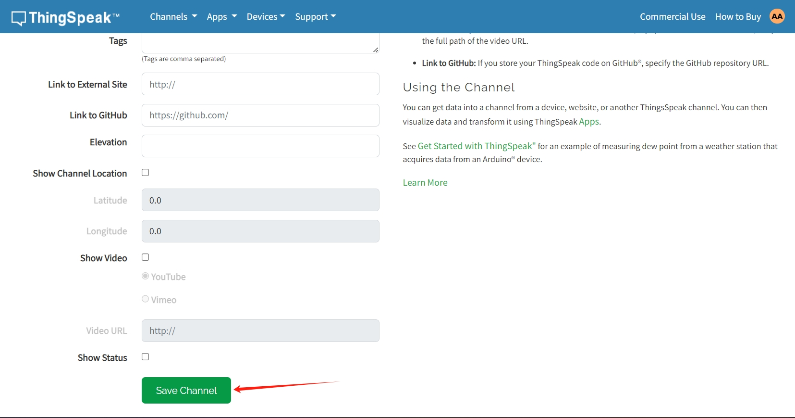 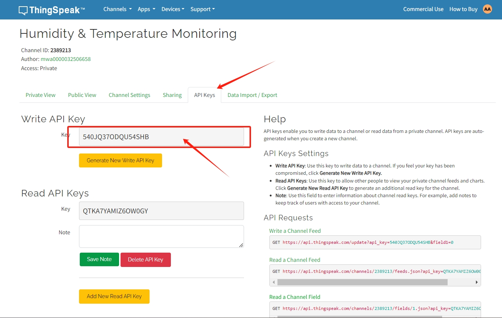Note down the Write API key provided by ThingSpeak for your channel.
3. Install Required Libraries:
- DHT sensor library for DHT11 sensor.
- ESP8266WiFi for ESP8266 connectivity.
In the Arduino IDE, install the following libraries if you haven't already:
4. Change additional Boards Manages:
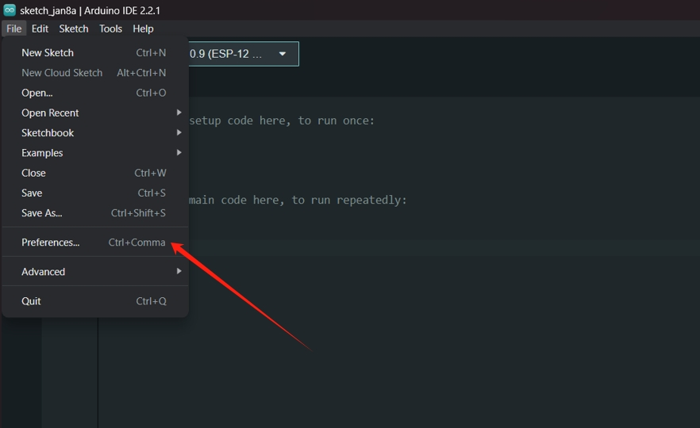
URL("http://arduino.esp8266.com/stable/package_esp8266com_index.json,https://dl.espressif.com/dl/package_esp32_index.json")
5.Arduino Sketch:
- Open the Arduino IDE
- Copy and paste the code below, ensuring to update the placeholders (ssid, password, apiKey) with your WiFi credentials and ThingSpeak API key respectively:
Make sure to connect DHT11 sensors properly
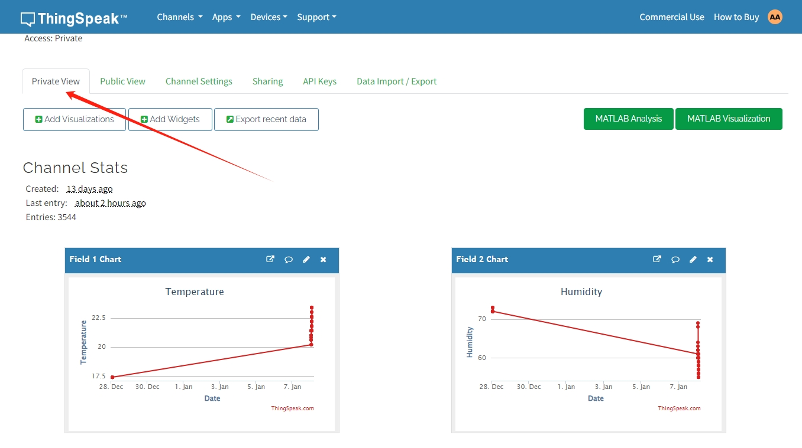Temperature and humidity are shown on the chart
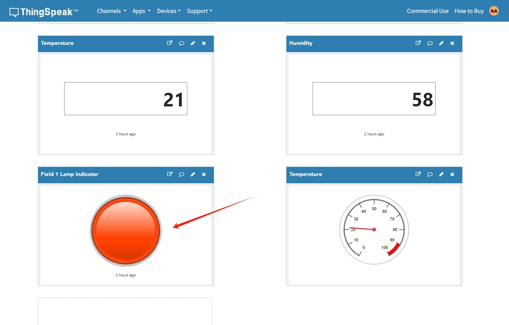Every 15 seconds, it will update because Think Speak needs 15 seconds to update
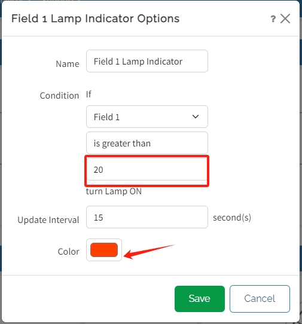When the temparature is < 20 it change color green to red